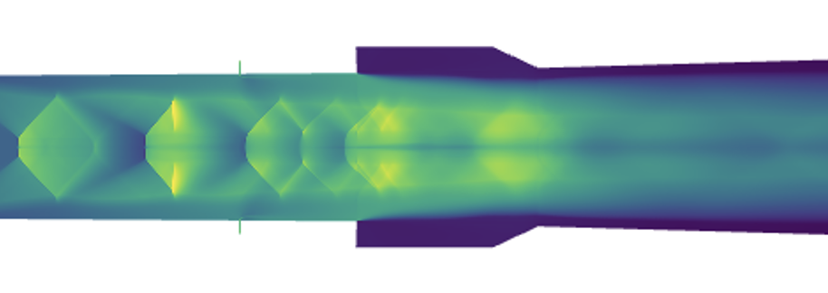
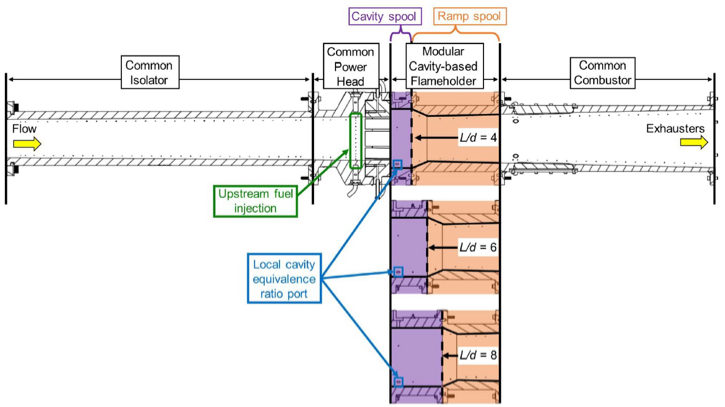
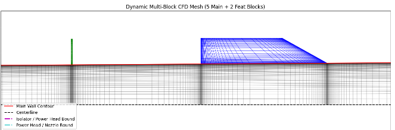
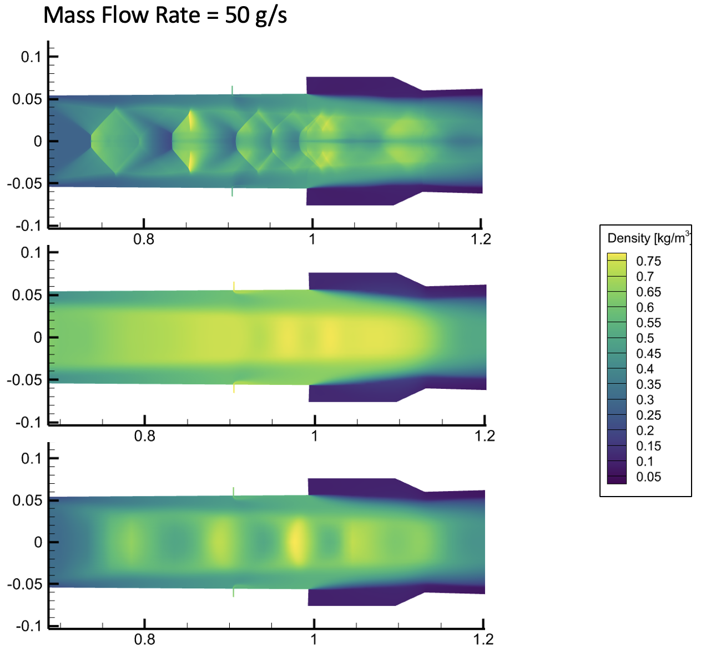
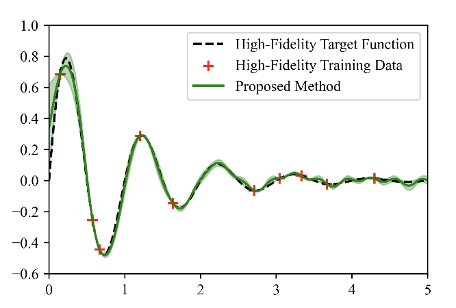
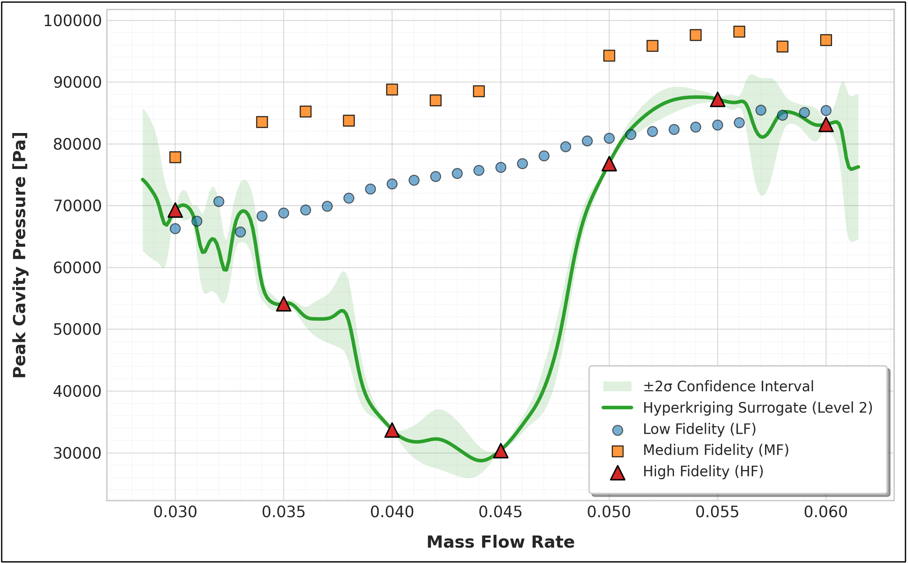
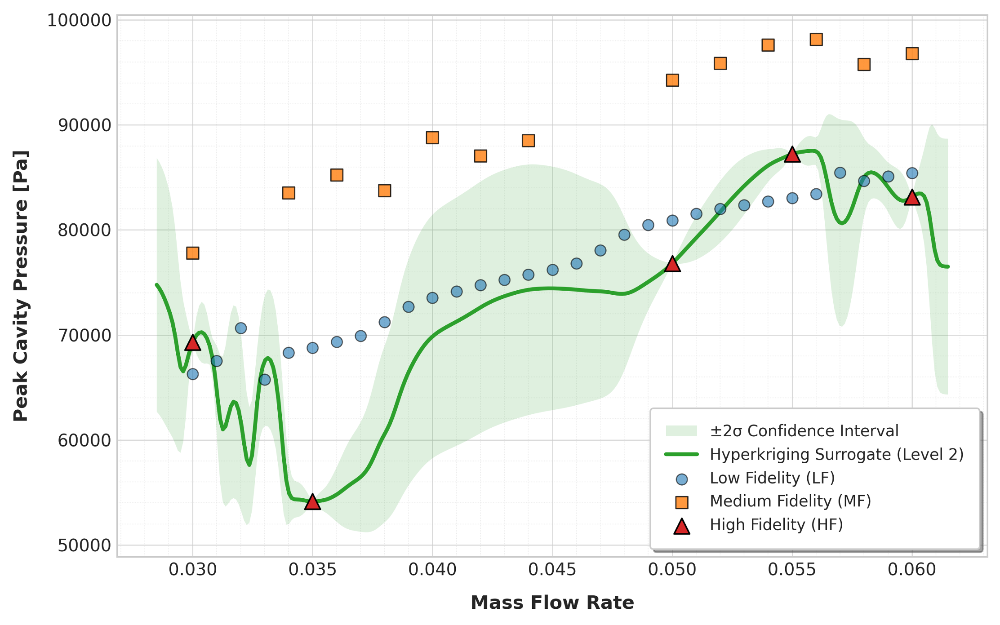

Project 01
Multifidelity Scramjet Optimization using ML

Overview
During my third summer at the Air Force Research Laboratory's High Speed Systems Division under the supervision of Dr. Dave Peterson and Dr. Clara Helm, I explored the use of multifidelity surrogate modeling of computational fluid dynamics data for theoretical scramjet optimization. The goal of the project was a proof-of-concept of combining lower-cost, low fidelty with higher-fidelity simulation data using a Hyperkriging machine learning model. The output surrogate model could then be used to help optimize a wide parameter space for a scramjet or test rig geometry.
The problem setup was a basic scramjet geometry that had been previously used at AFRL under the name MASTER: Modular Axisymmetric Suspersonic Test Cell. RANS (Reynolds-Averaged Navier Stokes) simulations would be run at low, medium and high fidelity setups using the NASA's VULCAN CFD code, with a target of 34000 iterations. Inflow Mach No. = 2.0, Turbulence Model = Menter-SST-2003 (New), simulations weere run on DoW supercomputers Raider and Carpenter. Quanitites of interest were pressure along the top wall of a scramjet, peak cavity pressure, and x positions of the shock train leading edge and peak cavity pressure.

Grid Generation
In order to effectively optimize for geometry and create multiple levels of grid resolution, I developed a python program for automated mesh generation. The script takes in length and angle inputs for the geometry of a basic scramjet test rig, and can accoutn for multiple cavities or multi-stage liquid fueld injection. It then builds a structured CFD grid, divides it into multiblocks for HPC optimization, visualizes the mesh for inspection before exporting it to Plot3D format. The script also allows for input parameters regarding wall cell size, max cell size and options for controlling clustering around walls and features of interest.

Multifidelity Outputs
The majority of the jobs run were "low fidelity" - meaning a coarse mesh (~ 5000 cells) and a 7 species, 3 step USAFA chemistry. "Medium fidelity" kept the same coarse grid, but introduced an advanced L32 32 species chemical kinetic model. "High fidelty" simulations featured a much finer mesh (~3.5 million cells) and the L32 chemistry model. For this study, the surrogate model would be comparing mass flow rate of ethelyne through the test rig's fuel injectors to peak cavity pressure.

Postprocessing
More Python and bash scripts were needed for simulation monitoring, setup and postprocessing. I developed a Python-based GUI for extracting shock-train leading edge position, as well as peak cavity pressure. In order to determine what range of mass flow rates to build the surrogate model on, I conducted a "bounds study" involving over 100 seperate simulation runs to determine the range at which a stable, reacting flow was guaranteed. The machine learning model used was part of a study from Atticus Rex and Dr. Elizabeth Qian of the Georgia Institute of Technology. Its novel approach to estimating functions, Multifidelity-Augmented Gaussian Process Inputs, uses a technique called "hyperkriging" to generate a predictive model based on one or more datasets at varying weights. In this case, I plugged in my low, medium and high fidelity datasets to produce a function that would estimate peak cavity pressure as a function of mass flow rate.

Results and Takeaways
The machine learning outputs from the datasets are shown below - again note that this project is meant to be a proof of concept that it is possible to use ML to optimize a scramjet engine. Datasets from different chemical kinetics, on average, respresented an average quanitifed difference of around 15 kPa from each other, which made it harder for the hyeprkriging tool to optimize a function with low confidence bounds. One image also includes two cases at mass flow rates 40 and 45 g/s that showed an abnormal peak cavity pressure (indicating a blowout). We see that in another iteration the model predicts a more accurate trendline for that region, albeit with a lower confidence levels.

